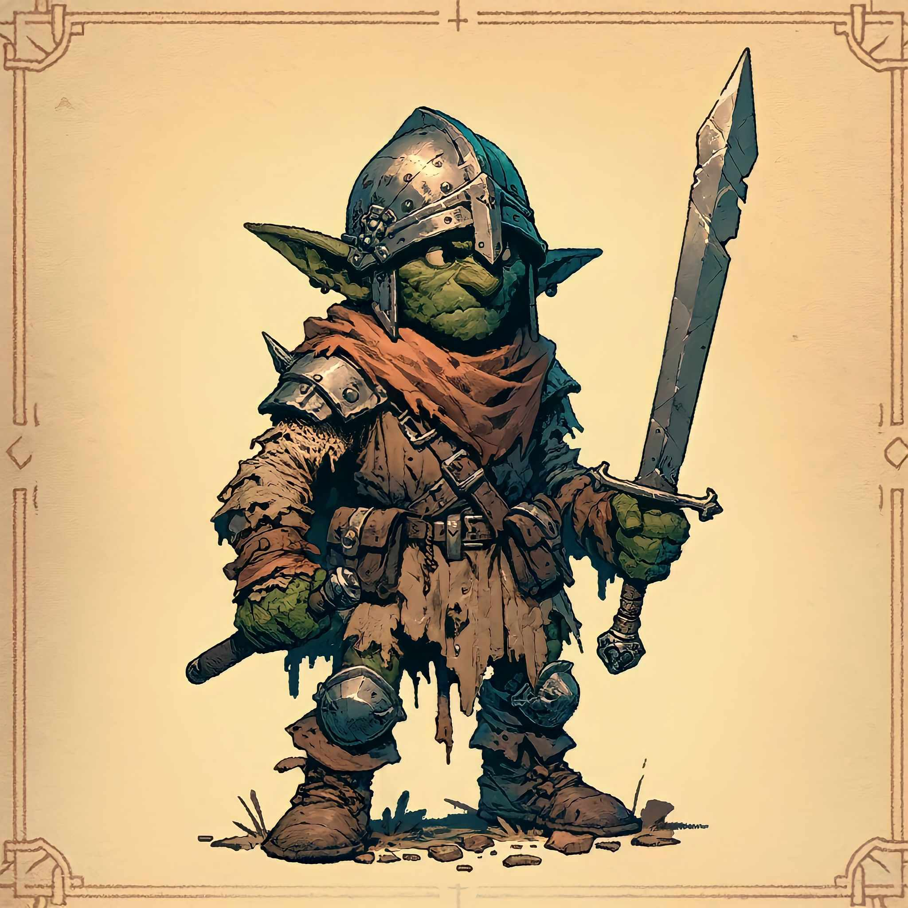

SRS dokumentum
H3 feladat
Történet
|
Dátum
|
Verzió
|
Leírás
|
Szerző
|
|
2023.11.04
|
1.0
|
Kezdeti verzió, H3 dokumentum elkészítése
|
Kelemen Beáta
|
|
2023.11.05
|
2.0
|
Másodlagos verzió, H3 dokumentum bővítése
|
Nádpataki-Sass Bálint
|
|
2023.11.06
|
3.0
|
Harmadlagos verzió, H3 dokumentum további bővítése, áttekintése
|
Buha Milán, Takács Ákos
|
Tartalomjegyzék
1.
Bevezetés
2.
Áttekintés
3.
A rendszer funkciói
3.1
Első követelmény
4.
Használhatóság
5.
Megbízhatóság
6.
Teljesítmény
7.
Támogatottság
8.
Tervezési korlátozások
9.
On-line dokumentáció és Help rendszer
10.
Felhasznált kész komponensek
11.
Interfészek
11.1. Felhasználói
interfészek
11.2. Hardware
interfészek
11.3. Software
interfészek
11.3. Kommunikációs
interfészek
12.
Alkalmazott szabványok
12.1. Kötelezően
alkalmazandó szabványok
12.2. Választás
alapján alkalmazott szabványok
13.
Mellékletek
1. Bevezetés
A megálmodott játékunk neve: The UNI Saga, ami egy MMORPG, és kalandjáték ötvözete. A játék egy kitalált univerzumban, egy kitalált országban játszódik, Triviálisztánban,
mely egy egyetemi környezetben helyezi el a játékosokat, és ahol a tudás és a bátorság a kulcs a sikerhez.
Játék célja a felfedezés, fejlődés és szociális interakciók más játékosokkal.
2. Áttekintés
A termék környezete: A játékunk Steamen és később Epic Games-re fog megjelenni a PC-re. Más eszközre nem készülünk megjelentetni. A játék egy többszemélyes, és egyszerre több szervert fogunk futtatni, különböző régiókban, legyen az Európa, Ázsia, Észak-Amerika stb.
Egy szerver 1000 embert képes befogadni, és egy játékos egyszerre egy karakterrel tud játszani. A játék elindulásakor várunk a legnagyobb játékosszámra. Ezen felül megpróbáljuk a a játékosszámunkat fenttartani, és eventeket, kiegészítőkkel próbáljuk "frissen" tartani a játékunkat. A szoftverünk végtelenségig játszható, mert különböző karakterek különböző játékstílust ígényelnek, és így akár többször is újrajátszható.
Egy karakterrel való teljes végigjátszásnak 100 órát tippelünk.
Funkciók: A játék több mint 100 órányi tartalommal rendelkezik, de a karakterek fejlődése alapján a játékidő tetszőlegesen hosszabbítható. A játékosok szabadon mozoghatnak a világban, de közben küldetéseket is teljesíteniük kell az egyetemet körülvevő sötét erdő mélyebb részei feloldásához. A többjátékos mód lehetővé teszi a játékosok számára, hogy közösen vigyék végig a játékot és küzdjenek az ellenségek ellen.
A szoftver bármely korosztály számára ajánlott és elérhető. Többnyire magánszemélyek körében lehet számítani az alkalmazás elterjedésére. Valószínűleg a legfőbb célközönség a fiatal felnőttek korosztálya, egyetemisták, azonban az is elképzelhető, hogy már végzett hallgatók, oktatók is fognak vele játszani. Bárki jól érezheti magát a játék közben, szolgálhat unalom elűzésre, kihívások iránti vágy csökkentésére, szórakozásra.
Korlátozások:
A játék időbeli korlátozásai: A játékban eltöltött idő nem korlátozott, így a játékosok bármennyi időt tölthetnek el benne anélkül, hogy bármilyen limitációval találkoznának.
Életkori korlátozások: A játék tartalma nem tartalmaz semmilyen olyan elemet, ami korhatár-besorolást igényelne, így minden korosztály számára hozzáférhető.
Grafikai beállítások: A játékosok képesek lesznek módosítani a grafikai beállításokat, hogy az alacsonyabb teljesítményű gépeken is élvezhető legyen a játék. Ezen felül a játékot úgy optimalizáltuk, hogy az 64-bitet támogató operációs rendszereken fusson a legoptimálisabban.
Jogi korlátozások: A játék használatához elengedhetetlen az Adatvédelmi és Általános Szerződési Feltételek(ÁSZF) és a végfelhasználói licencszerződés elfogadása.
Feltételezések: A felhasználó rendelkezik internetkapcsolattal az online funkciók működéséhez, tisztában van az operációs rendszere kezelésével. Egy időben csak egy felhasználó használja a terméket.
Függőségek: A felhasználó rendelkezik egy Directx 12-t és Vulkan-t támogató videokártyával. A VC Runtimes 2020 elérhető a szoftver megfelelő működéséhez. Amennyiben nincs elég hely a teljes adatbázis számára, lehetséges az osztott adatbázis alkalmazása.
3. A
rendszer funkciói
A The UNI Saga alkalmazás során a felhasználó által használt funkciók közé tartozik az új játék kezdése,
illetve a már mentett játék elindítása, folytatása.
A játékban nincs felső korlátja a szinteknek.
Azonban ahogy fejlődünk, a következő szint eléréséhez egyre több tapasztalati pontot kell gyűjtenünk.
A tapasztalati pontokat a fő- és mellékküldetések teljesítésével, valamint az ellenségek legyőzésével szerezhetjük meg.
Fontos megjegyezni, hogy a szintünk alatti ellenfelek kevesebb tapasztalati pontot adnak, tehát a fejlődésért meg kell dolgozni!
A szoftver egységei:
Menü: Egy egyszerű menü rendszert képzelünk el, ahol a játékos kiválaszthatja a karakterét, eszerint a kart, mellyel szeretne játszani.
Itt tudja elindítani az új vagy a meglévő, már mentett játékot is.
Beállításokat elérheti, ahol tudja szabályozni a hangerőt, felbontást, felhasználói adatokat, és sok mást.
Nem utolsó sorban itt tudja megállítani, folytatni, kilépni a játékból.

Karakterek: Az egyetemi élet középpontjában a hallgatók állnak és a sötét mágia által torzított szörnyekkel, illetve gonosz törvényen kívüli mágusokkal mérkőznek meg.
Minden oktató és tanár különféle kihívásokkal és feladatokkal várja a diákokat. Ezeket a karakter objektumokat nem a felhasználó kezeli.
Az NPC-k viselkedését a játékos és az ő döntései, eredményei befolyásolják.
Bizonyos NPC-kel lehet harcolni, szembe szállni.
Offline egyjátékos módok:
Use Case diagram: az alapvető felépítésről
Szereplők közül itt még csak a ’Játékos’ szerepel, és a rendszer válaszaihoz más emberi beavatkozás nem csatlakoztatható.
Új játék kezdése: Ezt a funkciót alkalmazva a felhasználó saját mentési slot-ot kiválasztva, a szoftver kezdeti állapotából indulhat.
Játék betöltése: Akár új, akár elmentett állapotot betöltve elindul a szoftver főbb része, mely egy RPG esetén két nagyobb csoportú kezelőfelület adott kritériumoknak megfelelően váltogatja egymást.
Nyílt világi cselekvés: RPG játékok esetén itt a játékos szabad döntéseket hoz, és próbálja a szoftver által kiadott küldetéseket teljesíteni, annak érdekében, hogy elérje a történet végét. Azonban a szoftvernek nincs beleszólása a felhasználó választásain, így mindenki a saját döntése alapján növelheti a progressziót.
Küldetések teljesítése: Amint egy adott küldetés minden egyes pontját teljesítette a játékos, egy megadott számú tapasztali ponttal, és/vagy megadott felszereléssel adományozza meg a rendszer.
Előrehaladás nyomonkövetése: A szoftverben lehetséges lesz a jelenlegi, vagy a már teljesített küldetések nyomon követésére. Ezt a szoftver is kezeli és esetleges magasabb szintű küldetéseket folyamatosan oldja fel.
NPC-k: A világ tele lesz nem játszható karakterekkel, akik küldetéseket adnak a "kalandornak", vagy bizonyos terület történetet mesélik el. Minden nagyváros rendelkezni fog eladókkal is.
Játékos és NPC-k közötti viszony: A Játékos mindegy egyes NPC-vel beszélni tud majd, valakimelyik több, mások kevesebb dialógus opcióval fognak rendelkezni. Egyesekkel sorosabb kapcsoaltot is lehet ápolni, és segítségedre lehetnek a harcokban.
Nyílt-világ atmoszféra változása: Változó időjárás lesz a játékunkban. Ezen kívűl minden terület különböző atmoszférával és időjárással fog rendelkezni.
Történet befolyása: Az UNI Saga rendelkezni fog egy főtörténeti szállal, de ez csak a vázat fogja adni a játéknak, és rengeteg mellékküldetéssel és egyéb szórakoztató minigame-mel lesz tele.
Beállítások: Paraméterek testreszabhatósága, karakterek alakítása, felhasznói élmények csoportosítása. Grafika, Audio, Irányítás.
Kilépés: A szoftver legális bezárását ez a funkció biztosítja.
"The Uni Saga" Crafting Rendszere:
Bevezetés
A játékban a crafting rendszer egy kulcsfontosságú eleme a játékélménynek. Ez a rendszer lehetővé teszi a
játékosok számára, hogy különböző nyersanyagokat gyűjtsenek és felhasználjanak a felszereléseik fejlesztésére
és erősítésére. Az alábbiakban részletesen ismertetjük a rendszer működését és elemeit.
Nyersanyagok
- Ércek és Gemek: A játék különböző pontjain található ércek és gemek fontos alapanyagok,
amelyeket a játékosok bányászhatnak és gyűjthetnek. Ezeket felhasználva készíthetnek erősebb fegyvereket,
páncélokat és egyéb tárgyakat.
- Varázsvirágok: A játék világában elrejtett varázsvirágok különleges tulajdonságokkal
rendelkeznek. Ezeket felhasználva a játékosok varázslatos tárgyakat készíthetnek, vagy meglévő
felszereléseiket bővíthetik ezekkel a különleges képességekkel.
- Rúnakövek: A rúnakövek titokzatos írásjeleket tartalmaznak, amelyek különböző
varázshatásokkal ruházhatják fel a tárgyakat. Ezek a kövek különleges erőforrások, amelyeket a játékosok
beépíthetnek a felszereléseikbe, hogy növeljék azok varázserősségét.
- Egyéb Nyersanyagok: A játék számos más nyersanyagot is kínál, mint például fák, bőrök,
szövetek stb., amelyeket különböző tárgyak és eszközök készítésére használhatnak fel a játékosok.
Crafting Folyamat
- Nyersanyagok Gyűjtése: A játékosoknak először meg kell szerezniük a szükséges
nyersanyagokat a játék világában történő kutatással, bányászással, gyűjtögetéssel stb.
- Tervezés és Kiválasztás: A gyűjtött anyagok felhasználásával a játékosok tervezhetik meg
saját felszereléseiket, kiválasztva a kívánt tulajdonságokat és varázshatásokat.
- Crafting és Fejlesztés: A tervezés után a játékosok elkészíthetik a kiválasztott tárgyakat,
illetve meglévő felszereléseiket fejleszthetik, erősíthetik a nyersanyagok felhasználásával.
- Varázserősítések és Rúnák: Különleges varázserősítések és rúnák hozzáadásával a játékosok
tovább növelhetik felszereléseik erejét és varázsképességeit.
A Rendszer Jelentősége
- Személyre Szabás: Lehetővé teszi a játékosok számára, hogy egyedi és személyre szabott
felszereléseket hozzanak létre.
- Stratégiai Elemek: A különböző anyagok és varázshatások kombinálásával a játékosok
különféle stratégiákat alkalmazhatnak.
- Felfedezés és Kihívás: A nyersanyagok keresése és a crafting folyamat ösztönzi a
játékosokat a játék világának felfedezésére és új kihívások megoldására.
Potionok Készítése
A potionok (bájitalok) készítése kulcsfontosságú része a crafting rendszernek. Ezek a potionok különböző
varázsvirágokból főzhetők, és számos előnyt biztosítanak a játékosok számára.
- Potionok Típusai:
- HP Potionok: Ezek a potionok az egészség (HP) helyreállítására szolgálnak, segítve a
játékosokat a harcokban és kalandokban.
- Mana Potionok: A mana potionok a varázserő (mana) újratöltésére használhatók,
lehetővé téve a játékosok számára, hogy tovább használják varázslataikat.
- Erősítő Potionok: Különböző típusú erősítő potionok állnak rendelkezésre, amelyek
ideiglenesen növelik a karakterek képességeit, mint például a sebesség, erő, vagy ellenálló
képesség.
- Potionok Készítési Folyamata:
- A játékosoknak először össze kell gyűjteniük a különböző varázsvirágokat és egyéb alapanyagokat a játék
világában.
- Ezt követően a gyűjtött anyagokat egy speciális főzőedényben kell összekeverniük, figyelembe véve a
potionok receptjeit.
- A főzési folyamat precizitást és időzítést igényel, és a játékosok kísérletezhetnek a különböző
hozzávalókkal, hogy új és erősebb potionokat hozzanak létre.
- Potionok Jelentősége:
- A potionok kulcsfontosságúak a játékstratégia szempontjából, lehetővé téve a játékosok számára, hogy
alkalmazkodjanak a különböző kihívásokhoz és helyzetekhez.
- A potionok főzése és használata ösztönzi a kreativitást és a tervezést, miközben új lehetőségeket kínál
a karakterek fejlődéséhez és a játékélmény gazdagításához.
- A potionok készítése tehát egy izgalmas és stratégiai aspektusa a "The Uni Saga" játék crafting rendszerének, amely tovább bővíti a játékbeli lehetőségeket és mélységet.
Pálcák
A "The Uni Saga" játékban a varázspálcák nem csak eszközök a varázslatok végrehajtásához, hanem fontos
stratégiai elemek is, amelyek befolyásolják a karakterek mágikus képességeit. Különböző típusú varázspálcák
állnak rendelkezésre, amelyek különböző mágia specializációkhoz igazodnak.
Pálcák Típusai és Specializációk
-
Elementális Pálcák:
- Tűz: Ezek a pálcák extra sebzést biztosítanak a tűzvarázslatokhoz, de csökkentik
a többi elemi mágia hatékonyságát.
- Föld: A föld specializációjú pálcák erősítik a földvarázslatokat, de kevésbé hatékonyak
más elemekkel.
- Szél: A szél specializációjú pálcák a szélvarázslatokat erősítik, ám gyengítik a többi
elem hatását.
- Villám: Villám specializációjú pálcák a villámvarázslatokkal működnek a legjobban, de
más elemekkel kevésbé hatásosak.
- Víz: A víz specializációjú pálcák a vízvarázslatokat erősítik, de csökkentik a többi
elem hatékonyságát.
-
Univerzális Pálca:
Ez a típusú pálca mindenféle elemi mágia használatát lehetővé teszi anélkül, hogy bónuszt vagy büntetést
biztosítana egy adott elemre. Ez ideális választás lehet azok számára, akik sokoldalúságot és adaptációt
részesítenek előnyben.
-
Varázslatok:
Minden pálcához különböző varázslatok társulnak, amelyek a pálca specializációjától függően változhatnak.
Például egy tűz specializációjú pálca lehetővé teszi a játékosok számára erőteljes tűzvarázslatok
használatát.
Pálcák Hatásai és Stratégia
A pálcák kiválasztása nagymértékben befolyásolja a játékosok mágikus stratégiáját és harci stílusát. Egyes
játékosok előnyben részesíthetik az egy elemre specializált pálcákat a nagyobb sebzés érdekében, míg mások az
univerzális pálcát választhatják a nagyobb rugalmasság miatt.
Enchantolás
A "The Uni Saga" játékban az enchantolás egy fontos mechanizmus, amely lehetővé teszi a játékosok
számára, hogy felszereléseiket különleges képességekkel ruházzák fel. Az enchantolás révén a karakterek
ellenállóbbá válnak bizonyos mágiatípusokkal szemben, vagy más előnyöket szerezhetnek a játék során.
Enchantolás Folyamata és Típusai
-
Mágiatípusokra Való Ellenállás:
- Specifikus Mágiatípusok: A felszerelések enchantolhatók úgy, hogy ellenállást
nyújtanak egy adott mágiatípussal (pl. tűz, víz, szél, stb.) szemben. Ez lehetővé teszi a
karakterek számára, hogy hatékonyabban védekezzenek bizonyos varázslatok ellen.
- Átfogó Védelem: Egyes enchantok átfogó védelmet biztosítanak mindenféle mágiatípus
ellen, ám ezek általában kisebb mértékű védelmet nyújtanak, mint a specifikus enchantok.
-
Fizikai Védelem:
A felszerelések enchantolhatók úgy is, hogy növeljék a karakter fizikai ellenállását, csökkentve ezzel a
fizikai sérülések mértékét.
-
Gyorsaság és Mozgékonyság:
Egyes enchantok növelik a karakter mozgási sebességét vagy agilitását, lehetővé téve gyorsabb mozgást
és manőverezést a csatatéren.
Enchantolás Jelentősége
- Személyre Szabott Játékstílus: A különböző enchantok lehetővé teszik a játékosok számára,
hogy a karaktereiket a saját játékstílusukhoz igazítsák.
- Stratégiai Előnyök: Az enchantok megfelelő használatával a játékosok stratégiai előnyöket
szerezhetnek, legyen szó védelemről vagy támadásról.
- Kihívásokra Való Felkészülés: Az enchantolás segítségével a játékosok jobban
felkészülhetnek a különböző kihívásokra és ellenfelekre a játék során.
Ellenséges Lények és Alosztályaik
Alaptípusok:
- Goblinok: Fagyos Goblin, Mocsári Goblin, Barlangi Goblin, Sötét Erdei Goblin
- Orcok: Fagyos Orc, Mocsári Orc, Barlangi Orc, Sötét Erdei Orc
- Troll: Fagyos Troll, Mocsári Troll, Barlangi Troll, Sötét Erdei Troll
- Szellemlények: Fagyos Szellemlény, Mocsári Szellemlény, Barlangi Szellemlény, Sötét Erdei Szellemlény
- Druidák: Fagyos Druida, Mocsári Druida, Barlangi Druida, Sötét Erdei Druida
Sárkányok:
Tűzsárkány: Egy erős és félelmetes ellenség, amely tűzvarázslatokat használ és képes tűzgömböket lövellni. Speciális páncélzata van, amely ellenáll a legtöbb támadásnak.
Jégsárkány: Egy ritka sárkányfaj, amely jéggel kapcsolatos varázslatokkal támad, és képes megfagyasztani az ellenségeit. Különleges képessége, hogy ideiglenesen láthatatlanná válhat.
Griffek:
Arany Griff: Gyors és agilis lény, amely magasból támadja meg az ellenségeit. Képes hatalmas sebzést okozni karmaival és csőrével.
Éjszárny Griff: Egy sötét színű griff, amely éjszaka aktív. Speciális képessége az, hogy hirtelen támadásokat indítson a sötétségből, meglepetés elemmel.
Óriások:
Sziklaóriás: Egy masszív termetű óriás, amely hatalmas erejével és sziklákkal támad. Képes nagy távolságokra hajítani nagy sziklákat.
Fagyóriás: Egy hatalmas óriás, aki a jeges tájakon él. Jéggel kapcsolatos támadásai vannak, és képes hatalmas területen fagyást okozni.
Mágikus Lény:
Árnyékjáró: Egy misztikus lény, amely az árnyékokban rejtőzik és hirtelen támadásokkal lepi meg áldozatait.
Mitikus Bestiák:
Főnix: Egy tűzvarázslatokra specializálódott legendás madár, amely képes feltámadni a hamvaiból.
Hidra: Egy többfejű szörny, amely minden levágott fej helyett kettőt növeszt. Speciális képessége az, hogy minden feje más típusú támadást indítson.
Ezek a mítikus ellenségek ritka és értékes tárgyakat dobnak, amikor legyőzik őket, és egyedülálló kihívást jelentenek a játékosok számára. A legyőzésük nemcsak hatalmas dicsőséget, hanem különleges jutalmakat is hoz, mint például egyedi fegyverek, páncélok, vagy varázstárgyak.

Basic goblin ellenfél
Epic goblin ellenfél
Legendary goblin ellenfél
Alosztályaik a térképi hovatartozásuk alapján változik:
- Fagyos: északi területeken és havas tájakon találhatóak
- Mocsári: nyugati területeken a mocsarakban
- Sötét Erdei: keleti és déli területeken
- Barlang: az egész térkép barlangrendszerében találhatóak
Ellenséges Csoportok Különleges Hatásai:
Fagyos Ellenségek Hatásai
- Lassítás: A Fagyos ellenségek támadásai lassítási effektust okoznak, ami csökkenti a
karakter sebességét és reakcióidejét.
- Ellenállóság Csökkenés: Csökkentik a karakter ellenállóságát a hideggel szemben, növelve
ezzel a jövőbeli fagyos támadások sebzését.
Mocsári Ellenségek Hatásai
- Mérgezés: A Mocsári ellenségek támadásai mérgezés effektust okoznak, ami idővel sebzi a
karaktert.
- Gyógyító Italok Hatékonyságának Csökkenése: A mérgezés hatására a gyógyító italok
kevésbé hatékonyak, 30%-kal kevesebbet töltve vissza az egészséget.
Sötét Erdei Ellenségek Hatásai
- Energia Elvonás: A Sötét Erdei ellenségek támadásai energiát vonnak el, ami csökkenti a
mana vagy a speciális képességek használati gyakoriságát.
- Látótér Csökkentése: Ideiglenesen csökkenthetik a karakter látóterét, ami megnehezíti az
ellenségek észlelését és a támadások kivédését.
Barlangi Ellenségek Hatásai
- Orientációs Zavar: A Barlangi ellenségek támadásai zavart okoznak, ami ideiglenesen
megnehezíti a térkép és a környezet megértését.
- Félelem Effektus: Ideiglenes félelem effektust okoznak, ami csökkenti a karakter
támadóképességét és védekezési hatékonyságát.
Nehézségi Szintek
Minden ellenségtípusnak három nehézségi szintje van: Alap, Elit, Legendás
- Alap Szint (pl. Fagyos Goblin): Nem jár semmilyen behatással.
- Elit Szint (pl. Elit Fagyos Goblin): Erősebb, több HP-val, páncéllal és sebzéssel.
- Legendás Szint (pl. Legendás Fagyos Goblin): A legmagasabb szint, mely jelentősen több XP-t,
aranyat és lootot ad, valamint rendkívül erős HP-vel, páncéllal és sebzéssel rendelkezik.
Jutalmak és Kihívások
A magasabb szintű ellenségek legyőzése nagyobb kihívást jelent, de egyúttal jobb jutalmakat is kínál.
- Minél magasabb a szint, annál több tapasztalati pontot (XP), aranyat és értékes tárgyakat (loot) dobnak az
ellenségek.
- A különböző környezeti specializációk új stratégiákat és megközelítéseket követelnek meg a játékosoktól.
A térkép

Térképi Régiók és Ellenséges Alosztályok
1. Fagyos Régiók (Északi és Havas Területek):
Itt találhatóak a Fagyos ellenségek. A hóval borított tájak és jeges környezet különleges kihívásokat és
akadályokat jelentenek a játékosok számára.
2. Mocsári Régiók (Nyugati Területek):
A Mocsári ellenségek. A sűrű mocsarak és lápok rejtélyes és veszélyes területet biztosítanak, ahol könnyen
eltévedhetnek a játékosok.
3. Sötét Erdős Régiók (Keleti és Déli Területek):
A Sötét Erdei ellenségek. Az árnyas erdők és sűrű bozótosok rejtelmes atmoszférát teremtenek, ahol az
ellenségek meglepetésszerűen támadhatnak.
4. Barlangi Régiók (Az Egész Térkép Barlangrendszereiben):
A Barlangi ellenségek az egész térkép alatti barlangrendszerben megtalálhatóak. A sötét és labirintusszerű
barlangok különleges kihívást jelentenek, ahol a játékosoknak vigyázniuk kell az összeomlásokra és más
veszélyekre.
A Régiók Jelentősége
Minden régió egyedi kihívásokkal és lehetőségekkel bír, amelyek befolyásolják a játékstratégiát és a felfedezés
módját.
A különböző régiókban élő ellenségek különböző taktikákat és felszereléseket igényelnek a legyőzésükhöz.
A játékosoknak alkalmazkodniuk kell a különböző környezetekhez, hogy sikeresen legyőzzék az ellenségeket és
felfedezzék a játék világának titkait.
Objektumok
A játékban a tereptárgyak és a környezet interaktív szerepet játszanak, amelyek befolyásolják a játékmenetet és a
stratégiákat. A játékosok varázslatai és az ellenségek cselekedetei változásokat hozhatnak létre a környezetben,
amelyek hatással lehetnek a játék dinamikájára.
Környezeti Interakciók
1. Varázslatok és Környezeti Hatások:
- Tűzvarázslatok: A tűzvarázslatok képesek felégetni a növényzetet, tárgyakat és akár falakat
is, megváltoztatva ezzel a terep szerkezetét.
- Vízvarázslatok: Ezekkel az áradásokat idézhetnek elő, ami új útvonalakat hozhat létre vagy
akadályozhatja az ellenségek mozgását.
- Földvarázslatok: A földvarázslatok képesek falakat és akadályokat emelni, ami védelmet nyújthat
vagy új utakat nyithat meg.
- Szélvarázslatok: Ezekkel erős széllökéseket generálhatnak, ami képes eltávolítani vagy elmozdítani
kisebb tárgyakat és akadályokat.
2. Ellenségek és a Környezet:
- Nagyobb ellenségek, mint például az orkok vagy trollok, képesek falakat és fákat ledönteni, megváltoztatva
ezzel a harci területet.
- Néhány speciális ellenség képes a környezetet a saját előnyére használni, például rejtőzködésre vagy csapdák
állítására.
3. Dinamikus Környezeti Elemek:
- Függőhidak és Átjárók: Ezek a struktúrák sérülékenyek lehetnek és összeomolhatnak a harc
során.
- Rejtett Kamrák és Titkos Ajtók: A környezetben felfedezhető titkos helyek extra erőforrásokat
vagy rövidebb utakat kínálhatnak.
- Interaktív Tárgyak: Például vázák, ládák, amelyeket fel lehet használni vagy össze lehet
törni további erőforrásokért.
Stratégiai Jelentőség
A környezet és a tereptárgyak stratégiai szempontból fontosak, mivel lehetőséget adnak a játékosoknak a kreatív
megközelítésekre és a változatos taktikákra.
A környezet megváltoztatása új lehetőségeket teremthet a harcban vagy a küldetések során, és befolyásolhatja a
harc kimenetelét.
Felfedező Küldetések
Régi Legendák Nyomában: A játékosnak egy ősi szöveg alapján kell felfedeznie egy elfeledett templomot,
amely tele van rejtélyekkel és veszélyekkel.
Az Elveszett Artefaktum: Egy értékes, rég elveszett mágikus tárgyat kell megtalálni és visszahozni
egy bizonyos helyről, mint például egy sötét erdő mélyéről vagy egy veszélyes barlangból.
Harci Küldetések
Ellenséges Táborok Megsemmisítése: A játékos feladata ellenséges táborok felszámolása egy adott területen,
beleértve a vezetők és kulcsfigurák legyőzését.
A Nagy Őr Megölése: Egy különösen erős ellenség, mint egy Legendás Goblin vagy Orc megölése, aki komoly
fenyegetést jelent a környező területekre.
Küldetésfajták
Gyűjtő Küldetések
Ritka Növények Gyűjtése: Különleges varázsvirágok vagy gyógynövények gyűjtése egy távoli területről,
amelyeket gyógyító italok vagy varázstárgyak készítéséhez lehet felhasználni.
Nyersanyagok Beszerzése: Fontos nyersanyagok, mint például ércek vagy különleges fémek beszerzése a
crafting rendszerhez.
Mentő Küldetések
Foglyok Megmentése: Elrabolt lakosok vagy más karakterek megmentése ellenséges területekről.
Veszélyes Terület Tisztítása: Egy adott terület megtisztítása az ellenséges lényektől, hogy biztonságosabbá
váljon a környék.
Több játékos mód:
Use Case diagram: az alapvető felépítésről a többjátékos módhoz
Leírás: A ’Játékos’ szereplők mellett itt bekerülnek második szereplők is a ’Játékos’ néven, mely nagy vonalakban ugyanazokat a szerepeket tölti be, mint a ’Játékos’.
- Centrális adatbázis: Többjátékos játékok esetében a centrális adatbázisok fontos szerepet játszhatnak a játékosok és a játékelemek közötti információ tárolásában és kezelésében. Ezek az adatbázisok lehetnek online szerverek, amelyek a játékosok közötti kommunikációt és a játékállapotok tárolását kezelik. Az ilyen adatbázisoknak számos fontos szerepük van a többjátékos játékokban
- Játék elhagyás: A játékosoknak mindig legyen lehetőségük azonnal kilépni a játékból, ha úgy döntenek. Ezt általában egy "Kilépés" vagy "Menü" gomb segítségével érhetik el. Egyes játékmódokban bevezetjük a bírságrendszert azok számára, akik túlzottan gyakran hagyják el a játékot. A bírságok lehetnek időszakos kizárások, pontvesztések vagy más büntetések.
- Kihívás kiválasztása: A játékosok sok különböző küldetés közül tudnak választani. A küldetés nehezsége az ajánlott szintből fog adódni.
- Játék kezdete: A főmenűben lévő START gomb megnyomásával lehetőség van kiválasztani a karaktered és belépni az UNI Saga világába.
- Pálya betöltése: A pálya betöltése során a játékmenet szünetelhet rövid ideig, amíg a szükséges erőforrásokat és adatokat beolvassa és előkészíti a következő pálya megjelenítéséhez. Ez alatt betöltőképernyőt fog mutatni a szoftver amíg dolgozik.
- Tereptárgyak, checkpontok betöltése: Ahogyan a pályabetöltési folyamat részeként, először az összes szükséges tereptárgyat és checkpoint-ot be kell olvasni a játékba. Ezek tartalmazhatnak 3D modelleket, textúrákat, animációkat, hangokat és egyéb adatokat.
Karok
Bájitalmester Kar (Potionmaster Guild)
Fő Szerepe:
A Bájitalmester Kar tagjai mesterei a bájitalok készítésének. Képességeik közé tartozik az egészség, mana, vagy erő növelésére, illetve az ellenségek gyengítésére szolgáló italok előállítása.
Speciális Képességek:
Ezek a karakterek különféle ritka összetevőket gyűjthetnek a játék világából, amelyekből különleges és hatékony bájitalokat készíthetnek.
Játékstílus:
A Bájitalmester Kaszt tagjai inkább a háttérből támogatják a csapatot, gyógyító és erősítő italokkal. A csatákban stratégiai előnyhöz juthatnak az általuk készített bájitalokkal.
Pajzsmágus Kar (Shieldmage Guild)
Fő Szerepe:
A Pajzsmágusok a védekezés mesterei. Képesek erős védelmi varázslatokat alkalmazni, melyekkel megvédik magukat és társaikat.
Speciális Képességek:
E kaszt tagjai nagyobb ellenálló képességgel rendelkeznek, és képesek pajzsokat, védőtereket létrehozni.
Játékstílus:
A Pajzsmágusok a csapat védelmezői. Csatákban fontos szerepük van az ellenséges támadások elhárításában és csapattársaik védelmében.
Harmónia Kar (Harmony Guild)
Fő Szerepe:
A Harmónia Kar tagjai kiemelkedő sebzést képesek okozni. Specializációjuk lehet fizikai vagy mágikus jellegű.
Speciális Képességek:
Erős támadó varázslatokkal és kombókkal rendelkeznek, amelyekkel nagy károkat okozhatnak rövid idő alatt.
Játékstílus:
Agilis és gyors támadás jellemzi őket. A Harmónia Kar tagjai ideálisak az ellenséges vonalak gyors lebontására és az erős ellenfelek gyors legyőzésére.
Passzív Mágus Kar (Passive Mage Guild)
Fő Szerepe:
A Passzív Mágusok az összetett, támogató varázslatok mesterei. Képességeik közé tartozik a csapat támadó és védelmi képességeinek növelése, valamint ellenséges képességek blokkolása vagy gyengítése.
Speciális Képességek:
Kontrolláló és támogató varázslatokban utaznak, képesek manipulálni a csatatér dinamikáját és befolyásolni a harc menetét.
Játékstílus:
A Passzív Mágusok a háttérből irányítják a csatatér eseményeit, taktikai előnyöket biztosítva csapatuk számára.
The UNI Saga - Kasztok és Képességfák
Minden kaszt egyedi és személyre szabott játékélményt kínál, lehetővé téve a játékosok számára, hogy saját stílusuknak megfelelően játszhassanak és fejlődhessenek a "The UNI Saga" világában. Ezek a kasztok nemcsak különféle játékstílusokat kínálnak, hanem lehetővé teszik a játékosok számára, hogy stratégiai szinten gondolkodjanak, miközben együttműködnek és versenyeznek a játék különböző kihívásaival.
Képességfák és Specializációk
Bájitalmester Kar (Potionmaster Guild)
Minden kaszthoz tartozó képességfa és szakértői rendszer lehetővé tenné a játékosok számára, hogy a karakterüket egyedi módon fejlesszék és specializálják. Itt van néhány ötlet a képességfákhoz és a specializációkhoz a Bájitalmester Kar számára:
Képességfa:
- Gyógyító Bájitalok: Speciális bájitalok, amelyek gyors gyógyulást és hosszú távú egészség-regenerációt biztosítanak.
- Erősítő Bájitalok: Bájitalok, amelyek ideiglenesen növelik a támadó és védelmi képességeket.
- Mérgező Bájitalok: Olyan bájitalok, amelyek ellenségeket mérgeznek vagy gyengítik.
Specializációk:
- Mester Bájitalkészítő: Speciális képességek a ritka és erőteljes bájitalok készítéséhez.
- Mérgező: Fokozott hatékonyságú mérgező bájitalok készítése.
Bájitalmester Kar (Potionmaster Guild)
Képességfa:
- Gyógyító Bájitalok: Speciális bájitalok, amelyek gyors gyógyulást és hosszú távú egészség-regenerációt biztosítanak.
- Erősítő Bájitalok: Bájitalok, amelyek ideiglenesen növelik a támadó és védelmi képességeket.
- Mérgező Bájitalok: Olyan bájitalok, amelyek ellenségeket mérgeznek vagy gyengítik.
Specializációk:
- Mester Bájitalkészítő: Speciális képességek a ritka és erőteljes bájitalok készítéséhez.
- Mérgező: Fokozott hatékonyságú mérgező bájitalok készítése.
Pajzsmágus Kar (Shieldmage Guild)
Képességfa:
- Erős Pajzsok: Erősebb védelmi varázslatok, amelyek nagyobb ellenállást biztosítanak.
- Varázsreflektálás: Képesség arra, hogy visszaverje az ellenfél varázslatait.
- Területi Védelem: Nagy területen védelmet biztosító varázslatok.
Specializációk:
- Védelmi Mágus: Kiemelkedő védelmi varázslatok és ellenálló képességek.
- Varázslatblokkoló: Speciális képességek az ellenséges varázslatok blokkolására és semlegesítésére.
Harmónia Kar (Harmony Guild)
Képességfa:
- Gyors Támadások: Gyors és hatékony támadási kombók.
- Elemi Támadások: Tűz, jég, villám stb. elemi varázslatok.
- Kritikus Támadások: Nagyobb esély a kritikus sebzésre.
Specializációk:
- Elemi Harcos: Specializálódás az elemi varázslatokban.
- Duelista: Kiemelkedő képességek a gyors és pontos támadásokban.
Passzív Mágus Kar (Passive Mage Guild)
Képességfa:
- Támogató Varázslatok: Csapattársak erősítése és gyógyítása.
- Ellenség Gyengítése: Ellenségek képességeinek csökkentése.
- Stratégiai Kontroll: A csatatér kontrollálása és manipulálása.
Specializációk:
- Taktikus Varázsló: Képességek a csatatér és a harc dinamikájának befolyásolására.
- Védelmező Mágus: Kiemelt képességek a csapattársak védelmében és támogatásában.
Minden kaszt képességfája és specializációs útvonala lehetővé teszi a játékosok számára, hogy a saját stílusuknak és stratégiáiknak megfelelően alakítsák a karakterüket.
Az Elvarázsolt Erdő Titka
Leírás: Egy titokzatos erő hatására egy erdő élőlényei agresszívvá váltak. A játékosok feladata a forrás felfedezése és a béke helyreállítása.
Cél: Harcolni az erdő élőlényeivel, megtalálni az elvarázsolás okát, és semlegesíteni a fenyegetést.
A Széttört Kristály Rejtélye
Leírás: Egy ősi kristály széttört, darabjait pedig a világ különböző részein rejtették el. A játékosoknak össze kell gyűjteniük a darabokat, hogy helyreállítsák a kristályt.
Cél: Gyűjteni a kristálydarabokat különböző helyszíneken keresztül, amelyek mindegyike saját kihívásokkal és rejtvényekkel rendelkezik.
Az Elfeledett Mágus Tornya
Leírás: Egy híres, de régóta eltűnt mágus tornyára bukkannak a játékosok, tele veszélyes csapdákkal és őrzőkkel.
Cél: A torony megmászása, csapdák és ellenfelek legyőzése, valamint a torony tetején rejlő titok felfedezése.
A Titkos Alagútrendszer
Leírás: A játékosok egy rejtélyes alagútrendszert fedeznek fel, amelyet titkos társaságok és gonosz lények használnak.
Cél: Navigálni az alagutakban, harcolni az ellenséges csoportokkal és megtalálni a titkos társaságok által rejtett kincseket és információkat.
Dinamikus események és Világ
A játékban a dinamikus események és világ eleme kiemelkedően fontos szerepet játszik az élményben. A játékot egy élő, változó világ jellemzi, ahol az időjárás és az évszakok változásai közvetlenül befolyásolják a játékmenetet és a környezetet. Ez a dinamika új szintre emeli a játékosok immerszióját és interakcióját a virtuális világgal.
Időjárás Változások
- A világban az időjárás változásai nem csak vizuális elemek, hanem befolyásolják a karakterek képességeit, a küldetések végrehajtását és az ellenségek viselkedését.
- Például egy hirtelen jött esőzés vagy vihar megnehezítheti a látást, csökkentheti a sebességet, vagy akár új útvonalakat és rejtett területeket is felfedezhetővé tehet a játékban.
Évszakok Váltakozása
- A játékban az évszakok változása nemcsak vizuális szépséget kölcsönöz, hanem új lehetőségeket és kihívásokat is hoz a játékmenetbe.
- Például a tél beköszöntével a tájakat hó borítja be, ami új akadályokkal és kihívásokkal szembesíti a játékosokat, mint például a csúszós utak vagy a hó alatt rejtőző veszélyek.
Speciális Események
- Az év során különleges események színesítik a játékot, mint például ünnepek, fesztiválok vagy ritka asztronómiai események, amelyek különleges küldetéseket és jutalmakat hoznak.
- Ezek az események lehetőséget adnak a játékosoknak, hogy különleges tárgyakhoz jussanak, új karakterekkel találkozzanak, vagy egyedi küldetéseket teljesítsenek.
A Világ Élővé Válása
A dinamikus események és változások révén a "The UNI Saga" világa élőnek és változatosnak érződik. A játékosok minden bejelentkezéskor új elemekkel és meglepetésekkel találkozhatnak, ami fokozza az élményt és elősegíti a felfedezés örömét.
Ez a dinamika segít abban is, hogy a játékosok egy mélyebb kapcsolatot alakítsanak ki a játék világával, hiszen a változásokra való reagálásuk hatással van a játékmenetükre és döntéseikre.
Ez a dinamikus világ és az események rendszere biztosítja, hogy a "The UNI Saga" mindig új és izgalmas maradjon a játékosok számára, folyamatosan új tartalmakkal és kihívásokkal gazdagítva az élményt.
Kereskedelmi Rendszer
A játék egyik legfontosabb és leginnovatívabb eleme a kiterjedt kereskedelmi rendszer, amely új dimenziót ad a játékélményhez és a játékosok közötti interakcióhoz. Ez a rendszer lehetővé teszi a játékosok számára, hogy egymás között kereskedjenek, eladjanak, vagy cseréljenek tárgyakat, felszereléseket és nyersanyagokat. A rendszer részletei a következőképpen alakulnak:
Interaktív Piaci Területek
- A játék világában különböző piaci területeket hozunk létre, ahol a játékosok találkozhatnak, tárgyalhatnak és kereskedhetnek.
- Ezek a piacterek nem csak virtuális üzletek, hanem társadalmi találkozóhelyek is, ahol a játékosok megbeszélhetik stratégiáikat, információkat cserélhetnek, vagy akár barátságokat köthetnek.
Eladási és Cserelehetőségek
- A játékosok képesek lesznek eladni vagy cserélni a játék során megszerzett vagy elkészített tárgyakat, felszereléseket és különböző nyersanyagokat.
- Az eladási rendszerben figyelembe vesszük a piaci keresletet és kínálatot, ami dinamikus árakhoz vezet. Ez egy reális piaci környezetet teremt, ahol a játékosok stratégiai döntéseket hozhatnak az eladások és vásárlások során.
Különleges Tárgyak és Ritkaságok
A piacokon különleges tárgyakat és ritkaságokat is megtalálhatnak a játékosok, amelyek különleges képességeket vagy előnyöket biztosíthatnak a játék során. Ezek a tárgyak korlátozott számban érhetők el, ezáltal növelve értéküket és keresletüket a játékosok között.
Aukciós Rendszer
Az aukciós rendszer lehetővé teszi a játékosoknak, hogy ritka vagy nagy értékű tárgyaikat meghirdessék, ahol más játékosok licitálhatnak rájuk. Az aukciók izgalmas és versengő elemet visznek a játékba, ahol a játékosok versenyezhetnek a legjobb tárgyakért.
Biztonságos Kereskedelmi Rendszer
A kereskedelmi rendszer biztonságos és felhasználóbarát, biztosítva, hogy a tranzakciók zökkenőmentesen és tisztességesen zajlanak. A rendszer szabályozza és ellenőrzi a tranzakciókat, megakadályozva a csalásokat és a tisztességtelen kereskedelmet.
Kereskedelmi Missziók és Küldetések
A játék tartalmaz kereskedelmi missziókat és küldetéseket, amelyek a piaci rendszerhez kapcsolódnak. Ezek a küldetések új lehetőségeket nyitnak meg a játékosok számára, hogy kereskedelmi ügyességüket kamatoztassák.
Ez a kiterjedt kereskedelmi rendszer nemcsak a játék gazdaságát gazdagítja, hanem az interakciókat és a közösségi élményt is fokozza a "The UNI Saga" játékban. A játékosok így nemcsak harcosként, hanem ügyes kereskedőként is megmutathatják képességeiket, és a játékban szerzett eredményeiket valódi értékké alakíthatják.
Karakter testreszabás
A karakter testreszabás egy kiemelt funkció, amely lehetővé teszi a játékosoknak, hogy egyedi és személyre szabott karaktereket hozzanak létre. Ez a funkció nagymértékben növeli a játékélményt, lehetővé téve a játékosok számára, hogy kifejezzék saját stílusukat és kreativitásukat. A testreszabás részletei a következők:
Megjelenési Beállítások
- A játékosok testreszabhatják karaktereik arcát, haját, bőr színét, és egyéb fizikai jellemzőket. Ez magában foglalja a haj stílusát, szem és haj színét, arc formáját és sok más lehetőséget.
- A részletes testreszabási lehetőségek révén a játékosok tényleg egyedülálló karaktert hozhatnak létre, amely tükrözi az ő egyéni stílusukat.
Ruházat és Felszerelés
- A játékosok választhatnak a számos elérhető ruhadarab és felszerelés közül, hogy karakterük megjelenését és képességeit testreszabhassák.
- Különböző páncélok, ruhák és kiegészítők állnak rendelkezésre, amelyek nemcsak esztétikai, hanem játékbeli előnyöket is biztosíthatnak.
Speciális Kinézetű Tárgyak
- A játékban speciális kinézetű tárgyakat is megszerezhetnek a játékosok, amelyek különleges és ritka megjelenést biztosítanak.
- Ezek a tárgyak megszerzése a játék során történő küldetések teljesítésével, különleges eseményeken való részvétellel, vagy magas szintű craftinggal lehetséges.
Karakter Fejlődés és Testreszabás
- A karakter fejlődése során a játékosok új testreszabási lehetőségeket és tárgyakat nyithatnak fel, így a karakterük fejlődésével párhuzamosan változik a megjelenésük is.
- A karakter testreszabás így szerves részét képezi a játékélménynek, és motivációt ad a játékosoknak a további fejlődésre.
Ez a részletes és sokoldalú karakter testreszabási rendszer lehetővé teszi a játékosok számára, hogy valóban sajátjukként érezzék a karakterüket a "The UNI Saga" virtuális világában. A testreszabás mélysége és sokszínűsége hozzájárul a játék egyediségéhez, és a játékosok közötti interakciókban is fontos szerepet játszik, hiszen lehetőséget ad a kifejezésre és az egyediség megmutatására.
Karakterkészítési Folyamat
A "The UNI Saga" játékban a karakterkészítés egy izgalmas és részletes folyamat, amely lehetővé teszi a játékosoknak, hogy egyedi és személyre szabott karaktereket hozzanak létre. Ez a folyamat a játék kezdeténél történik, és számos lépést foglal magában a karakter megjelenésének és képességeinek meghatározásától kezdve egészen a kezdeti felszerelések és képzettségek kiválasztásáig.
Karakter Alkotási Lépések
1. Karakter Alapjellemzőinek Meghatározása:
Nem és Faj Kiválasztása: Először is a játékosok kiválasztják karakterük nemét és faját. Ezen döntések hatással lesznek a karakter megjelenésére és bizonyos képességeire.
Alapjellemzők Beállítása: Ez magában foglalja az alapvető fizikai jellemzőket, mint például a magasság, testalkat, arcvonások és bőrszín.
2. Megjelenés Testreszabása:
Haj és Szem Szín: A játékosok kiválaszthatják karakterük hajának és szemének színét a széles palettáról.
Hajstílus és Arcvonások: Különböző hajstílusok és arcformák közül lehet választani, hogy a karakter még egyedibb legyen.
3. Felszerelés és Képzettség Kiválasztása
Kezdeti Felszerelés: A játékosok kiválaszthatják karakterük kezdeti felszerelését, amely meghatározza a kezdő képességeiket és stílusukat.
Képzettségek és Képességek: Különböző képzettségek és képességek közül választhatnak, amelyek meghatározzák a karakterük harci és mágikus képességeit.
4. Kaszt és Szakma Kiválasztása
Kaszt: A játékosok kiválaszthatják a karakterük kasztját, amely meghatározza a harci és mágikus stílusukat a játék során.
Szakma: Szakmák, mint például kovács, bájitalmester vagy varázsló segítenek a karaktereknek különleges képességek és tárgyak előállításában.
5. Arcszkennelési Funkció
A játék új és innovatív funkciót vezet be a karakterkészítési folyamatba: az arcszkennelést. Ez a funkció lehetővé teszi a játékosok számára, hogy saját arcukat használják alapként karakterük megalkotásához, amit egy kép vagy élő kamerakép bescannelésével érhetnek el.
5.1. Arcszkennelési Folyamat
Kép Választása vagy Élő Kamera: A játékosok dönthetnek úgy, hogy egy meglévő fotót használnak, vagy élőben scannelik be az arcukat a kamera segítségével.
Arcfelismerő Technológia: A játék arcfelismerő technológiát használ az arc jellemzőinek azonosítására és digitális reprezentációjának létrehozására.
Automatikus Karakter Alkotás: Az arcfelismerő algoritmus azonosítja az arc jellemzőit, mint például az arcforma, szemszín, és hajstílus, és ezeket automatikusan alkalmazza a karakterre.
5.2. Testreszabási Lehetőségek
Finomítás és Módosítás: A játékosoknak lehetőségük van tovább finomítani és módosítani a karakterük arcjellemzőit az arcbeli szkennelés után.
Kiegészítő Jellemzők: Ezen kívül további jellemzőket is hozzáadhatnak, mint például a smink, tetoválások, vagy egyéb kiegészítők, hogy még inkább egyedivé tegyék karakterüket.
5.3. Élethűség és Személyre Szabottság
Élethű Karakterek: Az arcszkennelési funkció lehetővé teszi, hogy a játékosok valóban egyedi és élethű karaktert hozzanak létre, ami hasonlít saját megjelenésükre.
Egyedi Játékélmény: Ez a funkció fokozza a játékélményt, mivel a játékosok valóban saját magukat láthatják viszont a játék világában, így növelve az azonosulás és elmerülés érzését.
5.4. Adatvédelem és Biztonság
Adatvédelem: A játék gondosan kezeli a játékosok által megosztott személyes adatokat, és biztosítja, hogy az arcfelismerő technológia használata során a magánélet védelme prioritást élvez.
Biztonsági Intézkedések: A játék számos biztonsági intézkedést alkalmaz, hogy megakadályozza az arcképek illetéktelen felhasználását vagy hozzáférését.
6. Végső Ellenőrzés és Mentés
Miután a játékosok elkészítették a karakterüket, átnézhetik és módosíthatják az összes kiválasztott jellemzőt. Miután minden tökéletesen megfelel az elvárásaiknak, a karaktert elmenthetik és kezdődhet a játék.
PvP Rendszer
Duellum Aréna: Egy külön terület vagy aréna létrehozása, ahol a játékosok barátságos vagy versenyképes duellumokat vívhatnak egymással.
Ranglistás Rendszer: A PvP arénában a játékosok ranglistán szerepelhetnek az elért eredményeik alapján. Ez motiválhatja őket a versenyben való részvételre és a fejlődésre.
Csoportos Csata Módok: Csoportos PvP módok bevezetése, ahol a játékosok csapatokat alkotva küzdhetnek meg egymással. Például lehetnek csapat alapú küldetések vagy arénaharcok.
PvP Jutalmak: Különleges jutalmak és kitüntetések a PvP sikerekért, mint például ritka felszerelések, különleges címek, vagy díszítő elemek.
PvP Események: Időszakos PvP események és versenyek rendezése, amelyek különleges kihívásokat és jutalmakat kínálnak.
Achievement (Teljesítmény) Rendszer
Teljesítmények Típusai: Különböző típusú achievementek bevezetése, amelyek a játék különböző aspektusaira összpontosítanak, mint például a küldetések teljesítése, felfedezés, harci eredmények, vagy közösségi tevékenységek.
Jutalmak és Elismertség: Az achievementek teljesítéséért a játékosok különleges jutalmakat kapnak, mint például egyedi tárgyakat, díszítő elemeket vagy speciális címeket.
Teljesítmények Nyomonkövetése: Egy rendszer, ami lehetővé teszi a játékosok számára, hogy nyomon kövessék a teljesítményeiket és lássák, milyen achievementek állnak még előttük.
Személyes Teljesítménytáblák: Egy felület, ahol a játékosok megtekinthetik saját és más játékosok teljesítményeit, ösztönözve ezzel a versengést és a közösségi interakciót.
Kihívások és Küldetések: Speciális kihívások és küldetések bevezetése, amelyek az achievementek teljesítésére összpontosítanak, tovább fokozva a játék izgalmát és változatosságát.
Játékbeli Pénznem és Kozmetikai Rendszer
Pénznem: "Akadémikus Arany"
Leírás: "Akadémikus Arany": Egy virtuális pénznem, amelyet a játékban használnak.
Felhasználás: A játékosok ezt a pénznemet használják kozmetikai tárgyak, skinek és egyéb játékbeli előnyök vásárlására.
Váltószám: Az "Akadémikus Arany" igazi pénzért vásárolható. Például 1 euró/dollár 100 "Akadémikus Arany" értékű lehet.
Vásárlási Rendszer
Webshop/Piactér: A játékosok online piactéren vásárolhatnak "Akadémikus Aranyat" és kozmetikai tárgyakat.
Tranzakciós Rendszer: Biztonságos és felhasználóbarát tranzakciós rendszer, amely támogatja a különböző fizetési módokat.
Kozmetikai Tárgyak és Skinek
Típusok:
- Ruházat: Egyedi ruhadarabok és szettek.
- Fegyverskinek: Különböző stílusú és kinézetű fegyverskinek.
- Pálcák: Varázspálcák különféle dizájnokkal.
- Háziállatok: Kísérő háziállatok, amelyek a játékosokkal tartanak.
- Animációk/Effektek: Egyedi karakteranimációk és effektek.
Exkluzív Tárgyak:
- Szezonális Skinek: Ünnepekhez és eseményekhez kapcsolódó limitált kiadású skinek.
- Ritkaságok: Különleges, ritka tárgyak, amelyek egyedi tulajdonságokkal rendelkeznek.
Gazdasági Modellezés
Microtranzakciók: Kis értékű vásárlási lehetőségek azok számára, akik kisebb összegeket szeretnének elkölteni.
Célcsoport: A játékosok vásárlási preferenciáinak figyelembevétele a legvonzóbb ajánlatok létrehozásához.
Egyensúly: Biztosítja, hogy a játék ésszerű maradjon azok számára is, akik nem költenek valódi pénzt.
Mikrofonos Interakció
Hangalapú Interakciók
A játékban az NPC-kkel való interakciót a játékosok hangalapú parancsokkal és kommunikációval végezhetik. A játékosok beszélhetnek az NPC-kkel a mikrofonon keresztül, ami lehetővé teszi számukra, hogy természetesebben és valósághűbben kommunikáljanak a játék világával.
Fejlett Beszédfelismerés: A játék fejlett beszédfelismerő technológiát használ, amely képes érzékelni és értelmezni a játékosok beszédét, és ennek megfelelően reagálni az NPC-k által.
Interaktív Történetmesélés
Döntésalapú Párbeszédek: Az NPC-kkel folytatott párbeszédek hatással lehetnek a játék történetére és a játékosokra váró kihívásokra. A játékosok választásai és reakciói befolyásolhatják az NPC-k hozzáállását, és nyitva hagyhatnak új küldetéseket vagy rejtett történeti szálakat.
Karakterspecifikus Reakciók: Az NPC-k különböző karakterekkel és személyiségekkel rendelkeznek, és eltérő módon reagálnak a játékosok különböző hangnemeire és választásaikra.
Játékbeli Implementáció
Hangfelismerés Beállítása: A játékban a játékosok konfigurálhatják a hangfelismerési beállításokat, hogy a rendszer a lehető legpontosabban érzékelje és értelmezze a beszédüket.
Interakciók Felvétele és Visszajátszása: A fontos párbeszédek felvétele és visszajátszása, így a játékosok visszanézhetik az NPC-kkel folytatott interakcióikat, és jobban megérthetik a történetük különböző aspektusait.
Biztonsági és Adatvédelmi Intézkedések
Adatvédelem: A játék biztosítja, hogy a hangalapú kommunikáció során keletkező adatok biztonságban legyenek, és csak a játékmenet javítására használják fel.
Felhasználói Beállítások: A játékosok testre szabhatják a hangalapú interakciókat, beleértve a hangfelismerés érzékenységének és a mikrofon használatának beállításait.
Ez az újítás tovább gazdagítja a szoftver interaktivitását és mélységét, valamint egy új szintre emeli a játékosok elmerülését és részvételét a játék virtuális világában.
Mesterséges Intelligencia a Chat Moderációban
Funkciók és Előnyök:
- Valós Időben Történő Elemzés és Cenzúra: Az MI rendszer valós időben elemzi a játékosok által küldött üzeneteket és automatikusan cenzúrázza a káromkodást, illetlen kifejezéseket és egyéb nem megfelelő tartalmakat.
- Folyamatos Tanulás és Fejlődés: Az MI algoritmusok folyamatosan tanulnak és fejlődnek, hogy hatékonyabban ismerjék fel a változó és új formájú illetlen tartalmakat.
- Személyre Szabható Szűrési Beállítások: A játékosok testre szabhatják saját chat-szűrési beállításaikat, hogy dönthessenek arról, milyen szintű moderálást szeretnének alkalmazni.
- Felhasználói Jelentések és Moderáció: A játékosok jelenthetik a rendszer által esetlegesen nem észlelt illetlen tartalmakat, amelyeket a moderátorok áttekintenek és szükség esetén intézkednek.
Biztonság és Játékosbarát Környezet:
A rendszer hozzájárul egy biztonságosabb és kellemesebb játékélményhez minden játékos számára. Különösen fontos ez a fiatalabb korosztály számára, hogy a játék környezete mentes legyen az agresszív vagy sértő tartalmaktól.
Admin Interface a Hostoló Karakternek
Fő Funkciók és Képességek:
- Felhasználói Interakciók Kezelése:
- Figyelmeztetések küldése játékosoknak.
- Ideiglenes vagy végleges kitiltás lehetősége.
- Világ Állapotának Kezelése:
- Rollback lehetőség a játék világának visszaállításához.
- Felügyeleti és Jelentési Eszközök:
- Részletes játékosnaplók elérése.
- Jelentések és statisztikák készítése.
- Felhasználói Visszajelzés Kezelése:
- A játékosoktól érkező visszajelzések fogadása és kezelése.
- Konstruktív visszajelzések alapján a játék fejlesztése és optimalizálása.
- Biztonsági és Adatvédelmi Protokollok:
- A játékosok személyes adatainak és információinak védelme.
- Biztonsági protokollok és irányelvek betartása.
Az Admin Interface a Hostoló Karakternek egy olyan eszköz, amely nem csak a játékmenetet teszi zökkenőmentesebbé, hanem hozzájárul a játékosok általános elégedettségéhez és biztonságérzetéhez. Ezáltal a játékvezetők képesek lesznek gyorsan és hatékonyan reagálni a játékon belüli eseményekre.
BattlEye Anticheat Integráció
A BattlEye Rendszer Jellemzői és Funkciói:
- Kernel-Alapú Ellenőrzés:
- A játékfájlokat és rendszerfolyamatokat ellenőrzi a tisztességes játékmenet érdekében.
- Automatikus Frissítések és Játékfájlok Átvizsgálása:
- Rendszeres frissítések a legújabb csalási módszerek ellen.
- Játékfájlok automatikus ellenőrzése a csalások azonosítására.
- Azonnali Intézkedések és Játékosok Kitiltása:
- Intézkedések azonnal a csalás észlelésekor.
- Ideiglenes vagy végleges kitiltások lehetősége a csaló játékosokkal szemben.
- Teljes Mértékben Testreszabható:
- Testreszabható rendszer a játék specifikus igényekhez.
- Beállítható a csalások specifikus típusaira való összpontosítás.
- Játékintegritás és Játékosok Biztonsága:
- Védi a játékintegritást és biztosítja, hogy minden játékos azonos feltételekkel versenyezzen.
- Biztosítja a játékosok adatainak biztonságát a hatékony csalás elleni küzdelem mellett.
A BattlEye anticheat rendszer integrációja biztosítja a tisztességes játékmenetet és a játékintegritást a "The UNI Saga" játékban. A csalások elleni hatékony küzdelemmel garantálja a játékosok egyenlő esélyeit és a biztonságos játékélményt.
Szekvenciális diagramm vásárláshoz:
Szekvenciális diagramm a küldetésekhez:
4.
Használhatóság
Betanulási idő:
A játék elsajátítása egyszerű, nem vesz igénybe sok időt. A fejlesztés során törekedtünk arra, hogy bármilyen felhasználó számára könnyen kezelhető legyen, annak is, aki még nem találkozott ilyen típusú játékkal. Bármilyen platformon, legyen az PC vagy konzolos. A játék kezdete előtt a felhasználó eldöntheti, hogy szeretné-e kipróbálni a tutorialt, ahol megismerheti a játékot és már tapasztalattal kezdi meg a játékot. A kezelőfelület is megkönnyíti a játékosok helyzetét, letisztult, egyszerű, jól érthető. Illetve további súgó funkció is van, amely magyarázatot ad az esetleges kérdésekre, az irányításról, billentyűzet funkciókról és egyéb játék elemekről. Tehát ez az egész betanulási folyamat körülbelül fél órát vesz igénybe.
Időigény:
Az elsajátítás időtartalma, nyilván függ a játékosok, felhasználók képességeitől, ismereteitől, az abba fektetett időtől, és a hajlandóságtól. Ahogy a betanulási időnél is említettük ettől függetlenül, a játék mielőbbi elsajátításához minden adott, kezdő- és gyakorló-, expert felhasználók is hamar el tudják sajátítani a tudást. A tanuló móddal, a súgó funkcióval. A teljes történet idő 100 óra azonban ezt a különböző karakterekkel, különböző játékstílusával megtudja növelni és végtelenségig tudja játszani. Pályánként, küldetésenként, szintenként adódik össze ez az időtartam. Egy pálya átlagosan 1 órát vesz igénybe, de itt is függ a felhasználó ismereteitől, ezt figyelembe változhat mindkét irányban ennek az ideje.
Segítség a rendszertől:
Elsősorban a platform specifikus tutorial, azaz tanuló mód jelenti, melyet az első találkozáskor megismerhet a felhasználó, itt az alapvető funkciókat, irányításokat ismerheti meg a felhasználó, azonban ezt csak minden játék elején tudja elindítani. Azonban a legnagyobb segítség a beépített súgó rendszer lesz, mivel ezt bármikor a későbbiek során előtudja hívni a játékos. Ha elakad a játék közben az adott pályához specifikus tippeket kaphat, de az irányítás gombjait és egyéb funkciókat is megtalál.
Egyéb lehetőségek a betanuláshoz:
A szoftverről írt dokumentációk elérhetőek online, vagy a README dokumentumban a telepítés után, azonban ha fizikai formában szeretnénk hozzájutni, akkor papír alapon is hozzájuthatunk a legfontosabb dokumentumokhoz. A felhasználók ezeknek az ismeretében, minden segítséget megkapnak.
Felhasználói felület:
A játék készítésekor, fejlesztésekor törekedtünk arra, hogy minél egyszerűbb legyen a kezelése. A menü esetében nem alkalmaztunk félre érthető, bonyolult menüpontokat, túlzott díszítéseket. Olyan kezelőfelületre törekedtünk, amit már a felhasználók láthattak korábban, ismerhetnek más játékokból, nem utolsó sorban egyszerű és átlátható felületet szerettünk volna kialakítani számukra.
Futtatás:
Természetesen függ a rendszer erőforrásaitól, hogy a felhasználó milyen eszközzel rendelkezik, s annak milyenek a kapacitásai. A játékon belüli beállításoktól függ az általa igénybe vett erőforrások mérete is. Egyértelműen befolyásolhatja az egyidejűleg futó programokat, gyengébb rendszereken a játék. Erősebb gépeken, eszközökön nem akadályozza a játék, hogy mellette internetezzünk, vagy más programokat futtassunk a bezárása nélkül. Összességében a játék felhasználói élménye minden eszközön garantált, de figyelembe kell venni a fent írt erőforrások függvényét.
5.
Megbízhatóság
-
A szoftver 99 %-ban(az esetlegesen felmerülő problémák miatt) rendelkezésre áll egyjátékos módban, többjátékos módban havi egy karbantartást tervezünk, melynek ideje körülbelül 5 órát vesz igénybe. Ez idő alatt a használhatóság korlátozott lehet.
-
MTBF: (Mean Time Between Failures): hibák között eltelt átlagos idő kb. 3000 óra
-
MTTR: (Man Time To Repair): egy hiba utáni javítás átlagos ideje 5 óra, függ a hiba mértékétől
-
A hibák kezelése: a súlyosság mértékétől függően kezelés vagy a program terminálása
A hibák javítását továbbra is mi, a Let Us Cook! csapat végzi.
6.
Teljesítmény
Az elvárt teljesítmény mutatók:
- Válaszidők: Egyjátékos mód esetén..
Online mód esetén Európán belül kb. 10 másodperc, 300 másodperc után, tehát 5 perc elteltével vagy a fölött a kapcsolat megszakad
- Áteresztő képesség összesen 50.000 TPS
Users(Threads) esetén 10.000
End to End Response Time: 2 másodperc
Pacing: 0 másodperc
Total Think Time: 0 másodperc
- Kapacitás: a játék indulásánál, egyjátékos módban, az egyidejűleg kiszolgálandó felhasználók száma 10.000
- Szerver:
CPU: AMD Ryzen7 7840HS
RAM: 32GB
Videókártya:NVIDIA GEForce RTX4060
Tárhely: 1TB Samsung 980 Pro SSD
OS: Windows
- Erőforrás igények:
CPU: Intel Core I5, AMD Radeon RX
RAM: 8GB
Videókártya: Nvidia Geforce GTX, AMD Radeon RX
Tárhely: 80 GB(SSD)
7.
Támogatottság
- A játék fejlesztése során, a használandó kódolási szabványok figyelembe vételével igyekeztünk betartania C++ szabályainak betartására, a későbbiek miatt, hogy könnyebb és átláthatóbb legyen a játék bővítése vagy a hibák javítása esetén. Illetve, hogy minél látványosabb és fejlettebb grafikát kínáljunk.
- Nem igényel karbantartást az egyjátékos üzemmód, a többjátékos módot pedig havonta szeretnénk karbantartani, szükség esetén nagyobb rendszerességgel fogjuk megtenni.
- Az esetlegesen felmerülő hibákra, a játékosok , a játék hivatalos oldalán tudják felhívni a figyelmünket, illetve egy erre fenntartott email címen keresztül is tudják jelenti őket, amiket igyekszünk minél hamarabb orvosolni.
- A játék az esetleges hibákról, az online bejelentkezett felhasználókról naplófájlokat készít, dokumentálja ezeket. Ezeket segédalkalmazásokkal kiértékeljük.
8.
Tervezési korlátozások
- C++ programozási nyelvben fogjuk fejleszteni, a látványos és fejlett grafika érdekében. Unreal Engine 5 motorját is használjuk, a fények és árnyékok realisztikus kezelésére, ami segít élethűvé tenni az épületeket és a tájakat. Emellett MySQL-re lesz szükség az adatbázisrendszerekhez, melynél törekszünk mindig a legfrissebb, legbiztosabbnak talált verziót használni. Fontos számunkra, hogy minél több felhasználóhoz el tudjuk juttatni a szoftvert, emiatt platformfüggetlen legyen. Illetve az objektum orientált programozást szem előtt tartva a nyelv kiválasztásakor.
- Fejlesztőeszköznek a Visual Studio Code-ot választottuk, ebben fog történni a fejlesztés.
- Célunk, hogy minél alacsonyabb rendszerkövetelményt igényeljen a játék konzolon és PC-n is. Ezáltal tudjuk biztosítani, hogy minél több hardveren tudjon futni. Nem utolsó sorban így több felhasználót el tudunk érni, mert az is hozzá tud férni, aki kisebb teljesítményű géppel, eszközzel rendelkezik.
- Milyen újra felhasználható elemek építhetők be az alkalmazásba (komponens- és/vagy osztálykönyvtárak, kész kódok stb.).
- Milyen fejlesztési módszertant, hogyan kell használni.
- A játék fejlesztési módszere a Scrum. A Scrum egy könnyen érthető és alkalmazható módszer, amely lehetővé teszi a folyamatos visszajelzést és a hatékony fejlesztést.
A Scrum projektet kis időablakokra osztja, amelyeket "sprinteknek" neveznek, általában 2-4 hét hosszúságúak. Minden sprint kezdetén a fejlesztőcsapat kiválasztja a sprint deliverables-t, amit a sprint végéig elkészítenek. A terméktulajdonos összeállítja a termék backlog-ot, amely tartalmazza a jövőbeni fejlesztésre tervezett funkciókat és javításokat. A backlog elemeket prioritással rendelkező listaként kezelik. Minden sprint kezdetén a fejlesztőcsapat kiválasztja a sprint backlog elemeket a termék backlog-ból, és meghatározza, hogy mely feladatokat hajtják végre a sprint során. A sprint végén tartott meeting, ahol a fejlesztőcsapat bemutatja a sprint deliverables-t a terméktulajdonosnak és más érdekelteknek. A visszajelzések és az elfogadás itt történik.
- Socket.io:
- Eseményalapú Kommunikáció: A Socket.io lehetővé teszi az eseményvezérelt kommunikációt, ami azt jelenti, hogy az üzeneteket eseményekhez köthetjük, például egy játékos belépéséhez vagy üzenetküldéséhez.
- Automatikus Újracsatlakozás: Ha megszakad a kapcsolat, a Socket.io gondoskodik az automatikus újracsatlakozásról, így a játékosok kommunikációja folyamatos maradhat.
- Kompatibilitás: Visszafelé kompatibilis a régebbi böngészőkkel is, amelyek nem támogatják a WebSocket-et, így szélesebb körű felhasználói bázist szolgál ki.
- WebSocket:
- Alacsony Késleltetés: A WebSocket egy TCP-alapú protokoll, amely lehetővé teszi az adatok gyors és hatékony továbbítását, minimalizálva a késleltetést.
- Valós idejű Kommunikáció: A WebSocket kétirányú kommunikációt tesz lehetővé a kliens és a szerver között valós időben, amely kulcsfontosságú a dinamikus és interaktív chat funkciókhoz.
- Hatékonyság: A WebSocket kevesebb fejlécadatot igényel a HTTP-hez képest, ami csökkenti az adatforgalmat és növeli a hálózati hatékonyságot.
- Együttes Használatuk Előnyei a "The UNI Saga" Játékban
- Sebesség és Megbízhatóság: A Socket.io és WebSocket együttes használata optimalizálja a sebességet és megbízhatóságot, biztosítva a zökkenőmentes és gyors kommunikációt.
- Skálázhatóság: A játék növekvő játékosbázisát könnyebben kezelheti ez a kombináció, mivel a WebSocket támogatja a nagy mennyiségű kapcsolatot, míg a Socket.io biztosítja a stabilitást és kompatibilitást.
- Felhasználói Élmény: A valós idejű, kétirányú kommunikáció javítja a játékosok közötti interakciót, ami növeli a felhasználói élményt és elősegíti a közösségi kapcsolatok építését a játékon belül.
9. On-line dokumentáció és Help rendszer
A játékról való információk a weboldalon található dokumentációkban lesz elérhető.
Ezeket a játékon belül, a menü pontból is eltudjuk érni, mivel átirányít minket a játék weboldalára.
A játék telepítése után a felhasználó számára elérhetővé válik a súgó, melyhez offline is hozzá tud férni a játékos. Itt továbbra is olvashat a kezdeti lépésekről, a játék menetéhez szükséges fontos információkról. Amennyiben fizikailag vásárolja meg a felhasználó, a csomagban található lesz a játék dokumentációja, illetve ez tartalmazni fog egy QR kódot is, illetve egy URL-t, melyeket beolvasva/beírva továbbítja a játékost a weboldalra, online fórumra, ahol megtalálja ezeket az információkat, dokumentumokat, kérdéseire a választ.
Illetve itt tudják még megosztani egymással a tapasztalataikat, esetleges kérdéseiket megvitatni.
10. Felhasznált kész komponensek
Steam API/SDK:
A játék kommunikációját segíti a Steam szervereivel, lekérdezheti a steam interface parancsait, adatokat küldhet a játékos által elért teljesítményekről, amelyeket a steam profilban átállíthat elért állapotúra.
Unreal Engine: Az általunk használt grafikai motor, amit a játék fejlesztéséhez használunk. 654571Ft fő/év
Visual Studio 2022:Szintén a fejlesztéshez használt licence, scriptek írásához használjuk. $1000 / fő
Szerver gép bérlés: Ennek az összege változható lehet, a játékosszámot tekintve lehet 1500$/hónap.
11.
Interfészek
11.1. Felhasználói interfészek
- használandó szabvány vagy kvázi-szabvány, stílus,
- a különböző felhasználói csoportok (munkakör, gyakorlottság stb. szerint) elvárásai,
- a leglényegesebb user interface elemek tervei.
A szoftver grafikus felülettel rendelkezik, amelyen keresztül a játékosok kommunikálnak a játékkal. A grafikus elemek segítségével könnyen navigálhatnak és folyamatosan tájékozódhatnak a játék világában. Az alábbiakban néhány példa található ezekre a grafikus elemekre:
- Üzenetablakok: Ezek az ablakok jelenhetnek meg, hogy tippeket adjanak a játékosoknak vagy tájékoztatást nyújtsanak a játékbeli eseményekről, például karakterek interakcióiról.
- Szövegdobozok: Ezek a dobozok lehetővé teszik a játékosok számára a szöveg bevitele és megjelenítése, például chat ablakok vagy felhasználónevek beírásához.
- Kiválasztó listák: Alkalmanként a játék lehetőséget kínál a játékosoknak arra, hogy válasszanak különböző lehetőségek közül, amelyek befolyásolhatják a játék folyamatát. Ezeket a választási lehetőségeket kiválasztó listák segítségével lehet kezelni.
Az ilyen grafikus elemek, például felugró üzenetek vagy szövegdobozok, segítik a játékmenetet és könnyen kezelhetővé teszik a játékot. A felhasználók könnyen értelmezhetik ezeket az elemeket, és segítik a játékosokat az információk megértésében és a játékbeli döntések meghozatalában.
A főmenü designja:

11.2. Hardware interfészek
A játékot hagyományosan számítógépen az egér és a billentyűzet segítségével irányítják, de lehetőség van kontrollerek használatára is. Konzolok esetében a konkrét konzolhoz tartozó kontrollerrel történik az irányítás. Célunk, hogy mindkét típusú hardverrel tökéletesen lehessen játszani.
11.3. Software interfészek
Ha a rendszernek más rendszerekkel az üzembe helyezés után, vagy belátható időn belül majd a kapcsolatot kell tartania más rendszerekkel, itt kell megadni a kapcsolat kiépítéséhez szükséges részletességű információkat.
Számítógépeken a program futásához egy 64 bites operációs rendszerre van szükség (Windows, Linux), illetve a legfrissebb .NET-et támogató runtime szoftverekre.
11.3. Kommunikációs interfészek
Ha a rendszernek valamilyen kommunikációs csatorna vagy csatornák segítségével kell kapcsolatot tartania a felhasználókkal vagy más rendszerekkel. (Például internetes, mobiltelefonos kliens stb.)
A játék online tartalmakat is kínál, amelyekhez aktív kommunikációs csatornára van szükség a játékosok és a szerver közötti kommunikációhoz. Ennek érdekében az internetkapcsolat elengedhetetlen. A játékosok azonosítását különböző módokon végezhetik:
Számítógépek esetében a játékosokat például SteamID használatával lehet azonosítani.
Konzolok esetében a játékosok az adott konzolhoz tartozó felületen történő regisztrációval kaphatnak UserID-t az azonosításhoz.
Fontos megjegyezni, hogy a játékhoz nincs külön indítóalkalmazás (launcher), így külön regisztrációra nincs szükség. A játékhoz való szerverkapcsolat TCP/IP protokollon keresztül történik.
A játékban a WebRTC (Web Real-Time Communication) technológiát választottuk a hangalapú kommunikáció integrálásához. Ennek több oka van:
- Közvetlen Kommunikáció: A WebRTC lehetővé teszi a játékosok számára, hogy közvetlenül, valós időben kommunikáljanak egymással. Ez a peer-to-peer kapcsolat biztosítja a gyors és zökkenőmentes hangátvitelt, ami létfontosságú a játékélmény szempontjából.
- Nincs Szükség Külső Bővítményekre: Mivel a WebRTC közvetlenül a modern böngészőkben működik, nincs szükség külön alkalmazásokra vagy bővítményekre a kommunikációhoz. Ez egyszerűsíti a felhasználói élményt és megkönnyíti a játékhoz való hozzáférést.
- Magas Szintű Biztonság: A WebRTC biztonságos, titkosított kommunikációt kínál, ami garantálja, hogy a játékosok beszélgetései privátak és védettek maradnak.
- Több Platform Támogatása: A WebRTC kompatibilis a legtöbb modern böngészővel és mobil operációs rendszerrel, így a játékunkat többféle eszközön is élvezhetik a felhasználók.
- Könnyű Integráció és Skálázhatóság: A WebRTC technológiája könnyen integrálható a játékunkba, és rugalmasan skálázható a jövőbeni fejlesztésekhez.
Hogyan Használjuk a WebRTC-t?
A "The Uni Saga" játékban a WebRTC-t elsősorban a következőkére használjuk:
- Hangalapú Csevegés a Játékosok Között: A játékosok valós időben beszélhetnek egymással a játék során, ami mélyebb szintű interakciót és együttműködést tesz lehetővé.
- Csapatépítés és Stratégiai Tervezés: A WebRTC segítségével a játékosok gyorsan és hatékonyan kommunikálhatnak, miközben csapatot építenek vagy közös stratégiákat dolgoznak ki.
- >Közösségi Interakció és Barátságépítés: A hangalapú csevegés segít a játékosoknak abban, hogy közösséget alakítsanak ki és barátságokat kössenek a játékon belül.
12.
Alkalmazott szabványok